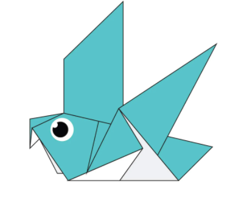
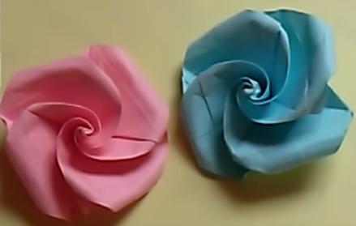

Origami Designs
About Us
Follow Us
Origami Pigeons

Click the image above to learn how to create a Origami Pigeon.
Interesting facts about Pigeons
- Pigeons are incredibly complex and intelligent birds.
- They have outstanding navigational abilities.
- Pigeons also have excellent hearing.
- Pigeons are really social animals.
- They are really strong and swift fliers because of their long wings and powerful muscles.
- Pigeons have really good eyesight due to the fact that their eyes are on the side of their head.
Origami Pandas
Click the image above to learn how to create a Origami Panda.
Interesting facts about Pandas
- Pandas have great camouflage.
- They spend a lot of their day eating.
- Bamboo makes up a huge part of a Panda's diet.
- Panda cubs are pink, but then grow up to be black and white.
- A grown panda can eat 12-38 kilos of bamboo per day!
- Pandas are loved because of their cuteness.
- Pandas are "lazy" as eating and sleeping make up their whole day.
Origami Flowers

Click the image above to learn how to create a Origami Flower.
To make origami flowers you need a square piece of paper.
- Fold the paper diagonally and open it up.
- Fold the paper diagonally the other way and open it back up.
- Turn the paper over.
- Fold the paper in half vertically.
- Fold the paper in half horizantolly.
- Turn the paper over again.
- Tuck the sides of the paper in and fold it so it looks like a triangle.
- Fold the flap into the middle.
- Fold it down again to make a small triangle.
- Open the flap and fold it down so it forms a square.
- Repeat with the other flaps.
- Fold the triangular flap horizantolly.
- Flip the paper over.
- Fold down the part that is sticking up so it forms a triangle.
- Repeat with the other one.
- Flip the paper over again.
- Take one square and fold it over.
- Do the same with the one diagonal to it.
- Start twisting the center of the flower.
- Take a toothpick and curl the ends of the squares.
- That's it!